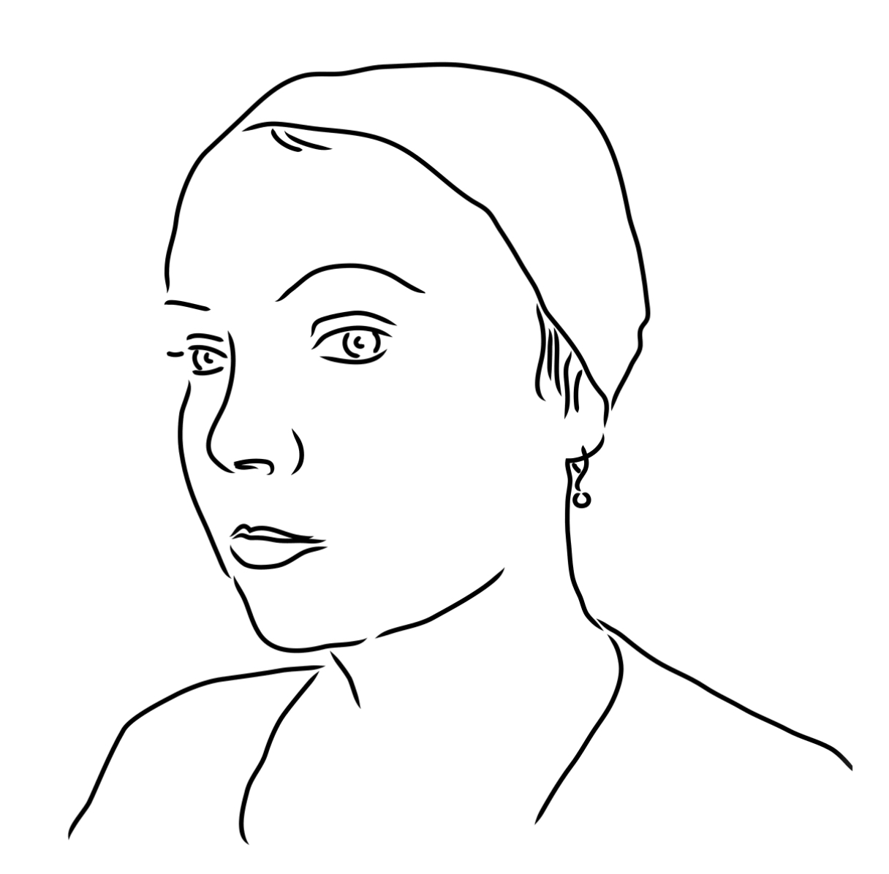

LIA is an Austrian artist and pioneer who has been exploring software art since 1995. She uses code as her primary medium, presenting her work through a range of digital applications, many of which are interactive. Her goal is to develop algorithms that convey her artistic visions, blending elements of traditional drawing with the distinctive abstract aesthetics of computer-generated imagery to create unique compositions.
Currently Based in Vienna,
Duration of work (1995 – Present)
